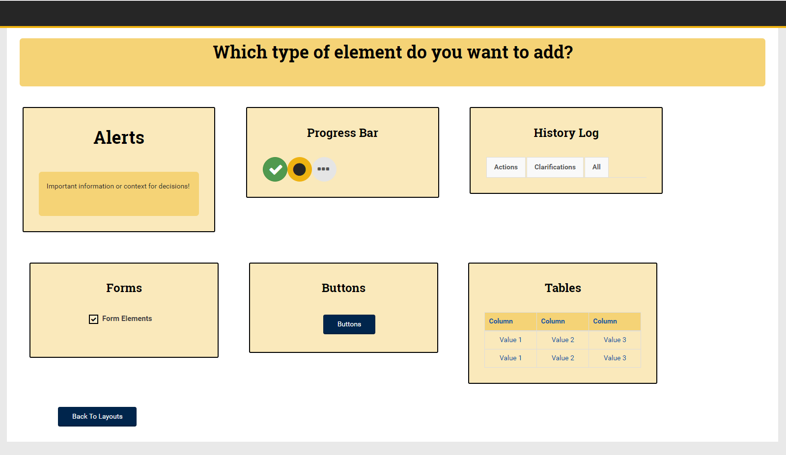

Rania Glass
Interaction Designer

When I was a child, I wanted to be an inventor. There's a thrill in using the imagination to dream up things – all kinds of things – that still excites and inspires me. As I got older, I was drawn to architecture, costuming, and interior design. My imagination was captured by beautiful spaces and displays, and I was inspired by the functionality of the pieces I saw. When I moved into my freshman dorm, my plans for the room weren't inspired by fairy lights or DIY art projects; they were driven by the goal of creating a space in which I could study and relax effectively. My decorative and organizational choices were based on research into how best to create that space. My freshman dorm was awesome because it was driven by design - I just didn't have the word for it yet.
At the end of freshman year, I changed my major to Computer Science. "This is where the inventors are," I thought. "These are the people building the future." Then, I saw what the designers do: It's the designers who envision the future, piece by piece, step by step, and who ask "How can we live better?" Brilliant inventions start with design. When I started to understand that, I realized that a designer is what I truly want to be.
What I'm Doing
Webapp UI Standards
I'm currently working as a UI/UX Designer at Georgia Tech Research Institute in the Enterprise Systems Department. This department designs and builds the applications that support researcher activity. My project is to create interactive documentation for the UI Standards so that we can implement responsivity and consistent UI elements throughout the suite of applications.
Requirements Gathering
This tool will be used by experienced Java developers; the users know how to program, but are unfamiliar with HTML5 and responsivity.

Through asking my colleagues about their process, it became clear that the current process involves lots of trial and error; it often prompts use of tutorials and CSS walkthroughs. This tool should meet that need so that the overall workflow is smoother.

This tool should provide all the atomically designed elements for building a GTRI application in easy-to-read, copy/paste ready HTML5, as specified by the client.
Ideation
What specific pieces of GTRI applications need to be incorporated into a general style guide?
They could include buttons, layout templates, icons, text stylings, interactive elements, tables, form elements, and more. And it's likely to change over time as new elements are created and standards are updated.
What possible features will meet the gathered criteria?
It could take the form of cards in a grid, or a list of elements available, or a sample page with "show code" options.

I sketched different flows in Balsamiq to more thoroughly examine the benefits and drawbacks of each approach. A combination of cards and sample elements ultimately proved to be the most effective solution.
Prototyping
I built prototypes in HTML. This made it very easy for the users to interact with the prototype during testing.
These prototypes will be used in the application; because they're already in HTML, they only need polishing before being ready to implement.
Evaluating
The primary goal of this system is helping developers to work faster and understand how to use a responsive framework.

This will be evaluated by determining how frequently the developers use the tool and how it affects the speed with which they can prepare deliverables.
Is the tool useful?
Take a look.
Carter Center's Forum on Women
I'm taking a class in UI Design this semester, and my team is working with the Carter Center in Atlanta, GA on a website redesign. This team was randomly assigned from students in the class, and there are five total members, including me.
Requirements Gathering
We interviewed potential users of both genders with an age range of 18-50.
We conducted a survey with a sample size of 30 classmates. We asked about how they consume media and how they learn about current events. Though this is a small sample size, the data showed some consistent methods of accessing information that we can apply to a larger population.
We gathered this data to establish an understanding of what systems users are accustomed to and what their expectations are when reading about social issues.

The results of the survey data can be seen here.
Ideation
As a team, we discussed what various interfaces could meet the needs described in the requirements. We discussed a mobile widget, a website, a mobile app, a browser extension, a kiosk, a recurring email newsletter, and a print media campaign. This conversation involved evaluating the advantages of each with regards to the design space. For example, an email newsletter provides more privacy to the end user than a kiosk does because of the setting in which these interfaces would be used. A print media campaign is the most passive interface we could think of, but it has a higher initial cost and there are location restrictions on where the prints could be placed that makes that interface uniquely challenging.
This was a divergence point in the design cycle because we aimed to come up with as many ideas and as creative ideas as possible.
Prototyping
Our very talented graphic designer, Erik, used Illustrator to craft these high fidelity mockups.
Our prototypes are meant to simulate the actual experience associated with seeing a poster or opening an email newsletter. These prototypes are tools that will be used to test the validity of our designs. We now have visual assets, and we can assess the cost of creating more like them and apply our usability criteria to them to determine how effectively they solve the problem presented.

Evaluation
Our usability goals are listed here.
We will be evaluating how well the design meets these goals with the help of a volunteer. This includes clarifying the intent of the usability test to the volunteer and informing him or her about the process in which they will participate. We will be asking them to sign an Informed Consent Form verifying their understanding and voluntary willingness to participate.
A well designed interface will make its affordances obvious to the user. To test this in our design, we plan to ask our volunteer what they believe they can do from within the interface before they have begun to interact with it. To examine the initial use case, we will be recording how long the volunteer browses the newsletter before finding a story of interest or closing the email. Should the user find that they are not interested in the story they select, we will be recording how many clicks and how long it takes them to return to the newsletter. This allows us to evaluate error checking. The design should support learnability, and tasks should become easier with familiarity. To measure this, we will task the volunteer to complete the same task twice and compare the amount of time required for both attempts.
This data will be recorded in a data sheet; each evaluator will fill out a data sheet during the testing session. The data sheet will have space for think-aloud insights and additional comments, allowing the evaluators to take notes as insights are discovered during testing.
Evaluation will be considered complete once no new insights are reached through additional testing.
What I've Done
These are some of the digital products I've designed.
Facebook Filter
Requirements Gathering
How is Facebook doing this?

What about other services for sharing and editing images?

And are they targeting different users?
Ideation
What possible layouts could meet the gathered criteria?

I worked side by side with teammates to create lots of possible solutions.

I used sharpies and paper to sketch up the ideas so that we could work fast & cheap.
Prototyping
Later prototypes were created using HTML; these were pretty high fidelity, but thanks to Bootstrap, we could make changes quickly as needed.

These prototypes were delivered to the developer and used to build the product.
Evaluating
We used qualitative and quantitative assessment criteria to evaluate the design.
This included user interviews and click counts.
This revealed that the less effort it takes, as determined by screens viewed and buttons clicked, the easier the product is to use.
Design Club Website
Requirements Gathering
Who will be accessing the site?

What are they looking for?

How can we best provide that?
Ideation
What possible features will meet the gathered criteria?

The entire board brainstormed together.

We sketched on paper and discussed ideas.
Prototyping
Prototypes were created using HTML. The team members who weren't as proficient with HTML partnered with some of the more senior members who were so that we could learn and work together efficiently.

These prototypes were used in part to build the final website.
Evaluating
We used mostly quantitative assessment criteria to evaluate the design.
How is it influencing member participation and involvement?

Is it a useful means of communication?